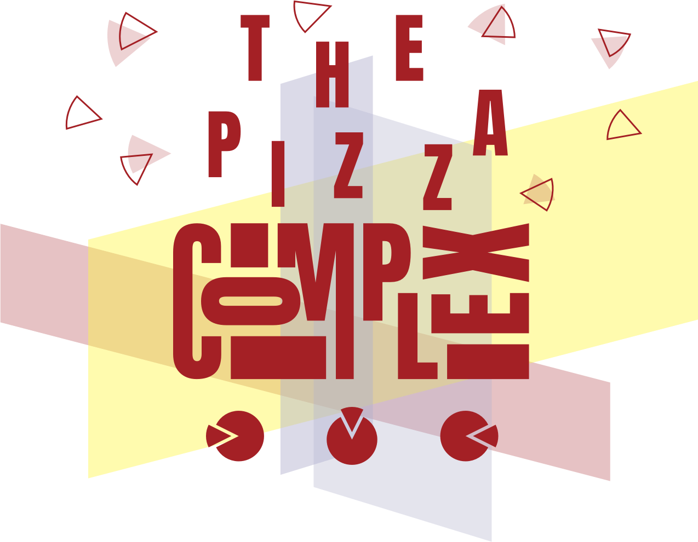
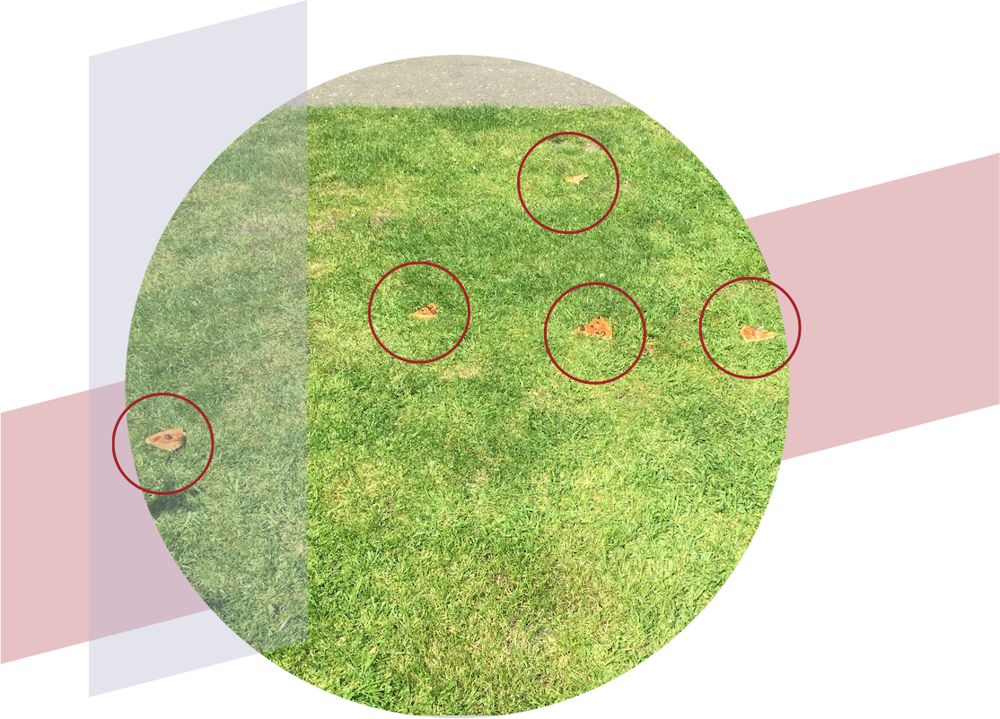
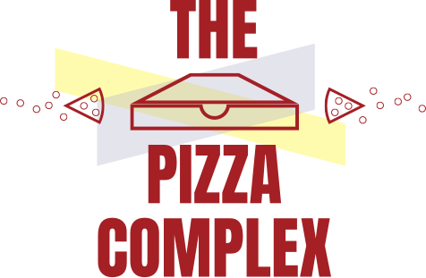

Or was it?
What follows is a dive into the data to find out just would make someone reject pizza, dear, eternally comforting pizza, in such a heinous manner.

Summer, 2018 Approximately 12:15 (GMT 0)
51°32'59.4"N 0°03'14.0"W 51.549819, -0.053883
It all started simply enough, walking through a park in East London and coming across what looked to be an entire circular-shaped pizza strewn, thrown really, madly about an approximately ten square meter space.
Steve was likely his name. He was likely christened Stephen in his hometown of Derby in the English Midlands. He was likely 32 and surly lately. He had lived in London up until that point for six years which is the point at which the dross of the fetid city begins to eat at your bones. There are few healthy responses to this. Steve chose the likeliest and most common response, despair, dread and inhuman amounts of lager.
One fine summer day it came to a head.
As we can see from the data, Steve had quite a start to the day. The night before was a leaving do for a colleague John at work that he hated. It was cause to celebrate, yet he was consumed with regret and self-hatred. The data indicates that Steve was as this guy at the bar said, "off his tits."This particular data set is fascinating. What we see is an almost even five-way split in Steve's psyche of factors (regrets, dissappointments and frustration), all of which are suspected to have contributed to the projecting said compound factors on the pizza.
Steve hated onions. It was that simple. It really is. However, the first scenario doesn't really address first principles potentialaties. Steve opened the box with haste. it was lunch time. Well, an early lunch time at any rate. He was hungry. Things were simple. Simple as the sun hanging there in the sky smiling down on what was otherwise to be a halfway decent day. It wasn't to be.
One never expects trauma to ensue when opening a pizza box. A person, any normal, regular, sort of person like Steve, would open a pizza box and be enveloped by delight. This diddn't happen. There were onions.
"No pepperoni she says. No fucking pepperoni. Who the fuck doesn't like pepperoni?
"Oh, don't quite feel like that today she says. My ass you don't feel like it.""
"You don't feel like pepperoni because it reminds you of fucking Steve Johson doesn't it? Oh it does, doesn't it?
"You don't like pepperoni today? Who doesn't like pepperoni on a certain day?""
"Oh, just not in the mood love she says. No in the mood for pizza I like but will go have lunch at Itsu twice a week with some fucker who sits next to you at work will you?"
